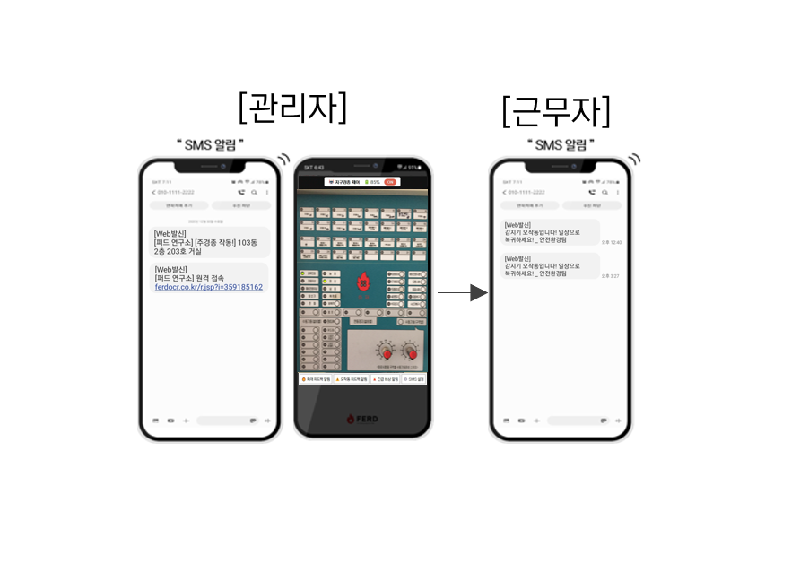
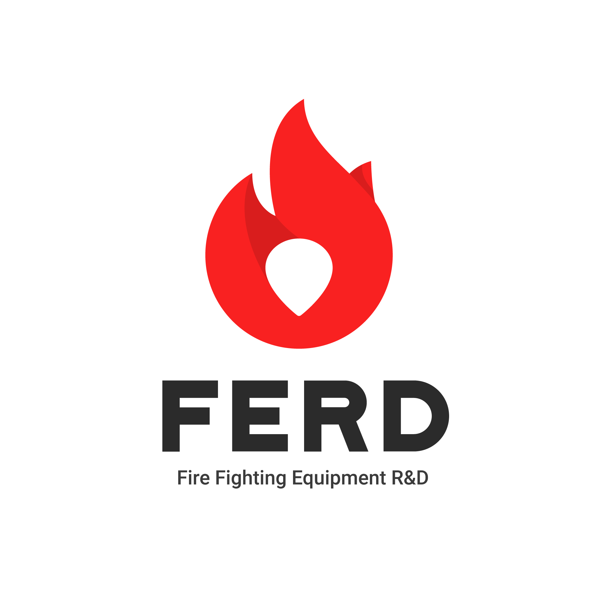
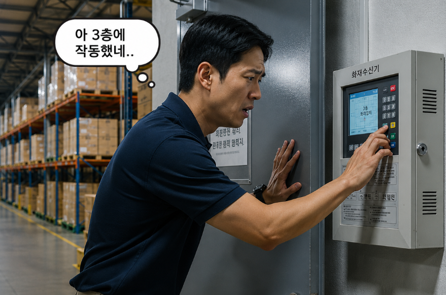
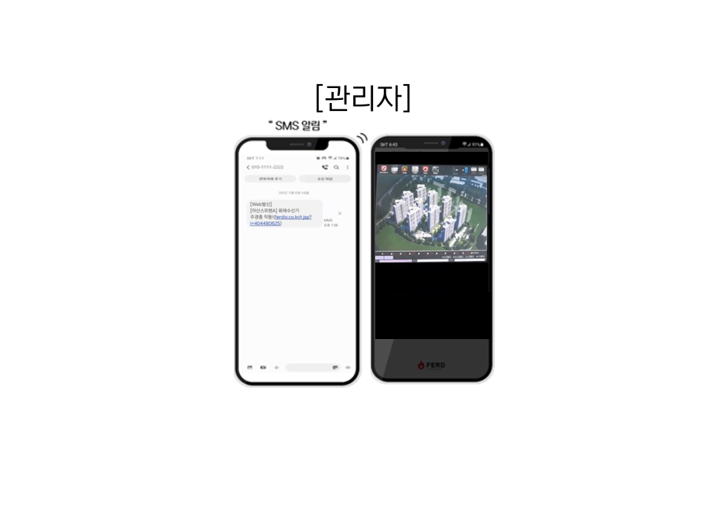
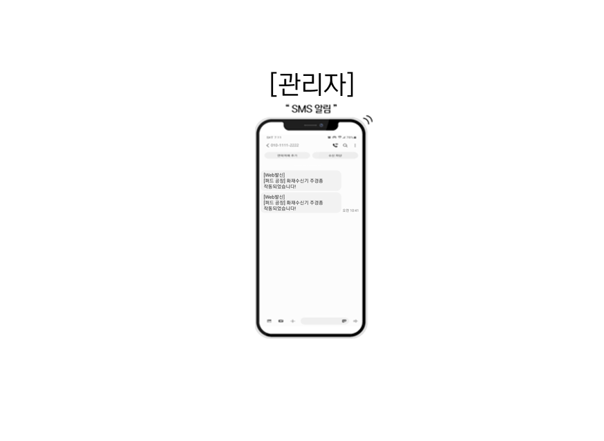
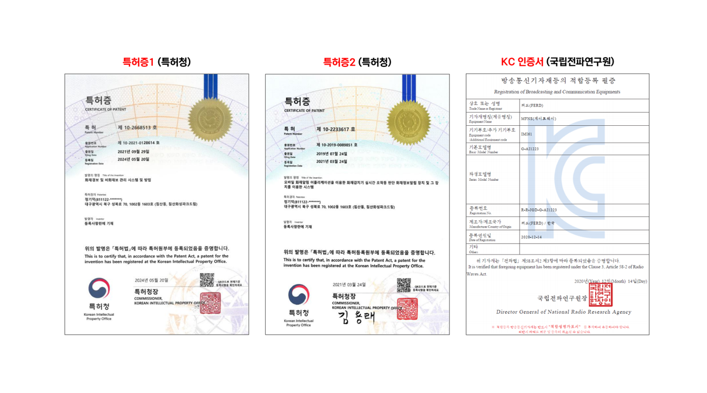

① SEB-R, P (공유형)
- SMS 발송: 주경종 작동시 "작동 위치 + 원격 접속 URL" 즉시 전송
- 수신기 감시·제어: URL 클릭 시 셉시스템 접속 후 원격 감시·제어
- 피드백 루프: 실시간 화재 및 오작동 SMS 전파

비화재보는 전세계적인 현안입니다.
국내도 소방청 통계에 따라, 화재 경보가 발생하면 99% 이상이 비화재보(오작동)입니다.

화재수신기가 작동하더라도 물리적인 거리로 인해 사무실이나 외부에서는 즉각적인 인지가 불가능합니다.
빗발치는 문의 전화 속에서 관리자가 수신기를 직접 확인한 후 현장으로 출동해야 하므로 초기 대응 골든타임을 낭비하게 됩니다.
원격 감시를 통해 주경종 작동 시 이를 신속히 인지하고 사전에 대응 준비를 할 수 있어야 합니다.
잦은 비화재보(오작동)로 인해 근무자와 거주자들은 경보가 울려도 "또 오작동이겠지"라며 대피하지 않는 치명적인 안전불감증에 노출되어 있습니다.
수신기 원격 제어를 통해 비화재보시에는 경보를 신속히 끄고 오작동 상황을, 화재시에는 화재 상황을 신속히 현장 인원들에게 공유하는 시스템이 필요합니다.
비화재보는 완벽히 제거하기 어려운 기술적 한계를 가지고 있습니다.
퍼드(FERD)는 이를 전제로, 합법적인 수신기 원격 제어 기술인 셉(SEB) 시스템으로 비화재보를 스마트하게 대응합니다.




네, 100% 합법입니다.
퍼드의 SEB R, P시스템은 수신기 내부 회로를 조작하거나 선을 브릿지하는 불법 개조를 절대 하지 않습니다.
고화질 웹캠으로 화면을 '보고', IoT 스위치봇을 물리적으로 부착해 스위치를 '누르는' 완벽한 비침습적 외부 제어 방식이므로 소방법에 전혀 저촉되지 않습니다.
그리고 SEB RD, IO도 수신기와 연결하는 접점이 없어 수신기에 유해한 영향을 줄 수 없는 구조입니다.
네, 모든 기종에 호환 가능합니다.
화재 감지 및 제어 방식이 수신기의 브랜드나 통신 프로토콜에 의존하지 않고 '물리적 제어'와 '디스플레이 인식'을 기반으로 작동하므로 구형 P형부터 최신 R형 수신기까지 모두 설치할 수 있습니다.
가능합니다.
인터넷 환경이 구축되어 있지 않은 지하실이나 방재실의 경우, 퍼드에서 자체적으로 통신사 LTE 라우터(또는 Cat.M1 모듈)를 함께 구성하여 독립적인 통신망으로 완벽하게 시스템을 운영해 드립니다.
건물 운영 중에도 전혀 문제없이 설치가 가능합니다.
수신기 전원을 내리거나 복잡한 배선 공사가 없기 때문에, 현장 환경에 따라 다르지만 보통 1~2시간 내외로 신속하게 설치 및 세팅을 완료하고 시스템 설명과 인수인계를 진행합니다.
시스템 구축비와 정기 사용료로 구성됩니다.
최초 설치시 현장에 설치하는 하드웨어와 시스템 셋팅 등 일회성 구축비와 서버 사용료로 구성되며, 월 또는 연간 사용료 중 유연하게 선택하실 수 있습니다.
도입 문의를 남겨주시면 현장에 가장 합리적인 맞춤형 견적을 신속히 안내해 드립니다.
※ 파이어베이스와 연동합니다.
| 일간 | 주간 | 월간 | 총 누적 |
|---|---|---|---|
| -- | -- | -- | -- |
 카카오톡 1:1 상담하기
카카오톡 1:1 상담하기